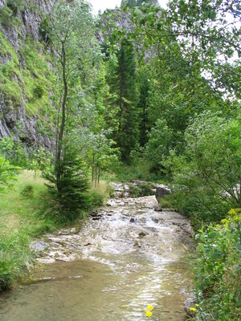

ϧⲉⲗⲗⲟⲧ, ϧⲉⲗⲟⲧ nn f, ravine, wady including water & rocks: Nu 13 23 (var ϧⲉⲗ.), Ps 59 2, Is 30 33 (SF), Lu 3 5 (var do) φάραγξ; Ge 14 8, Ps 83 7 (var do), Mic 1 4 (SA) κοιλάς (all SAF ⲉⲓⲁ); Ez 7 16, 33 28 (S ⲧⲟⲟⲩ) ὄρος; ib 47 9 (S ⲭⲓⲙⲁⲣⲣⲟⲥ) ποταμός, K 214 ϧ., ⲙⲟⲩ ⲛⲥⲱⲣⲉⲙ, ⲁⲛⲁⲡⲁⲓ, ⲭⲓⲙ., ϩⲉⲗⲟⲥ all وادي; Ez 39 15 vallis; MG 25 89 ϯⲡⲉⲧⲣⲁ ⲉⲧⲥⲁⲡⲣⲏⲥ ⲙⲡⲓϩⲉⲗⲟⲥ ⲥⲁⲡⲉⲙⲉⲛⲧ ⲙⲡⲓϣⲏⲓ ⲥⲁⲡϣⲱⲓ ⲛϯϧ. (var ⲡⲉⲧⲣⲁ);as adj: Ez 47 5 ⲙⲙⲱⲟⲩ ⲛϧ. (S = Gk) χείμαρρος. Place in Nitria v EW Hist 33, Amélineau Géog 447.
(noun feminine)
earth
ravine, wady including water & rocks [φαραγξ]

complete
630a
See also:
| view | ⲉⲓⲁ, ⲓⲁ S ⲉⲓⲁⲉⲓⲉ, ⲓⲁⲓⲉ A ⲓⲁ B ⲓⲉⲉⲓ F | (noun masculine) valley, ravine [φαραγξ, κοιλη, σπηλαιον]2793 |
| view | ⲙⲉϣϣⲱⲧ, (ⲙⲉⲛϣⲱⲧ) B plural: ⲙⲉϣϣⲟϯ, ⲙⲉⲛϣⲟϯ S | (noun masculine) plain, field [πεδιον, ναπη]1144 |